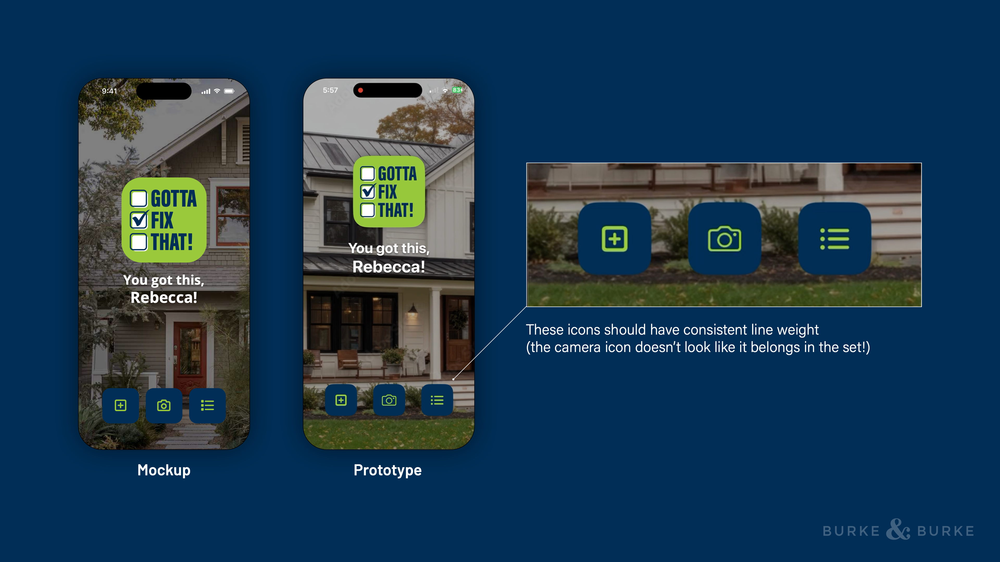
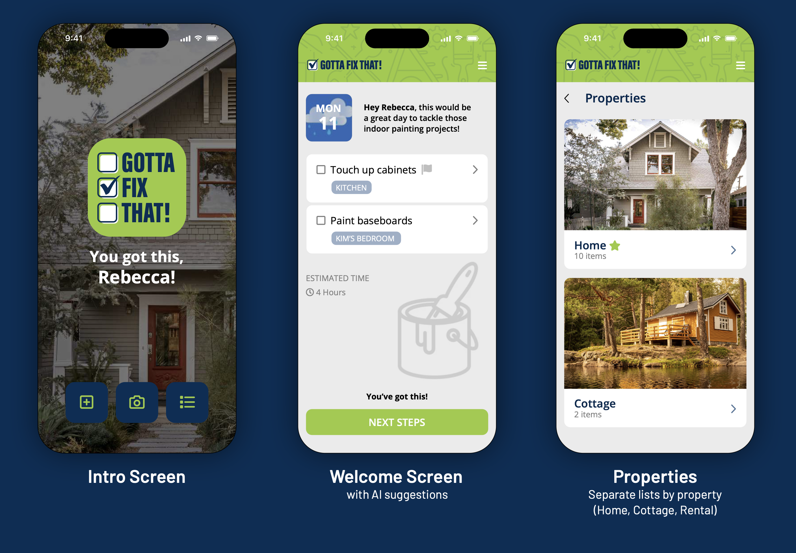
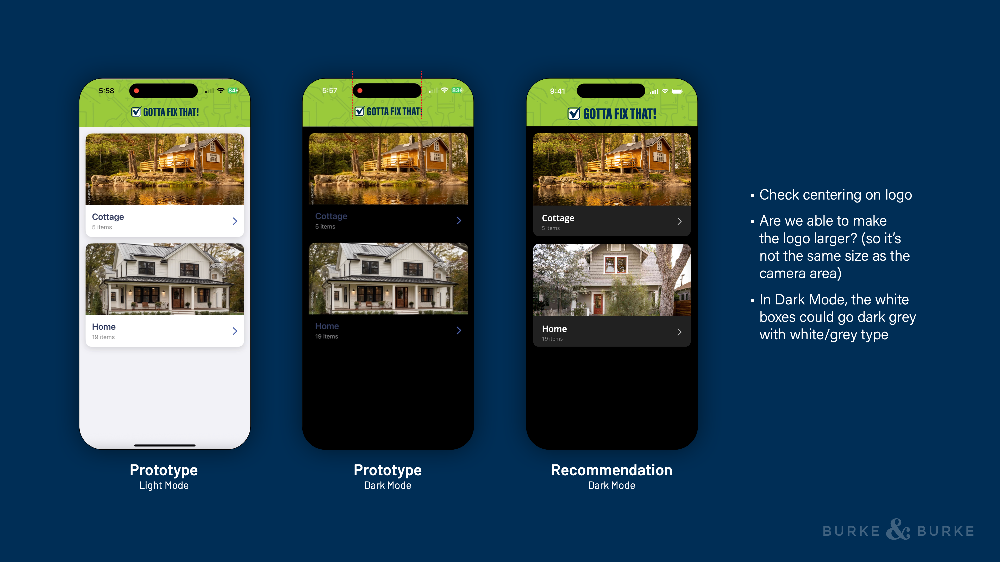
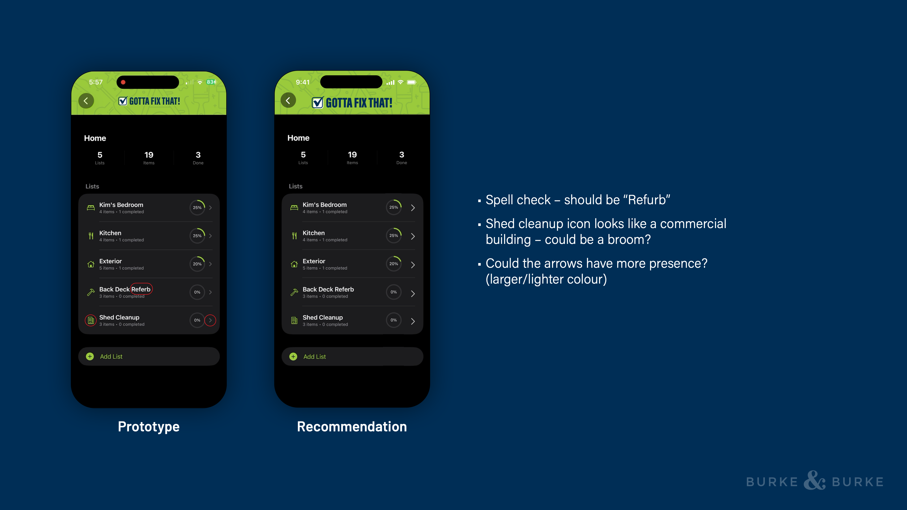
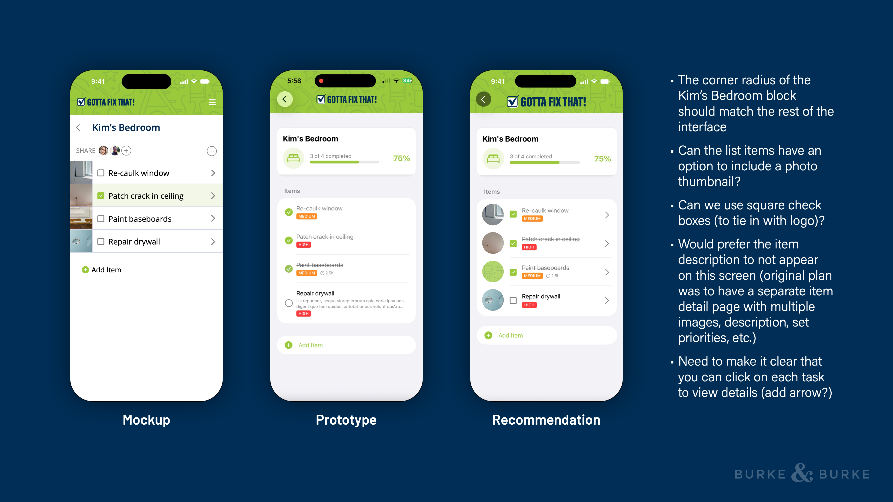
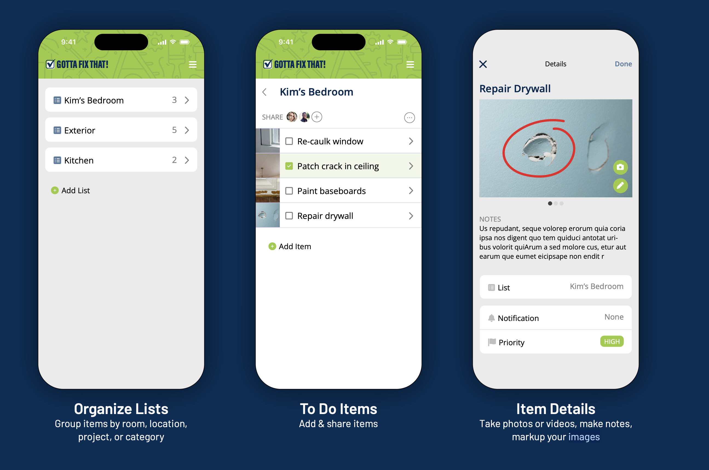
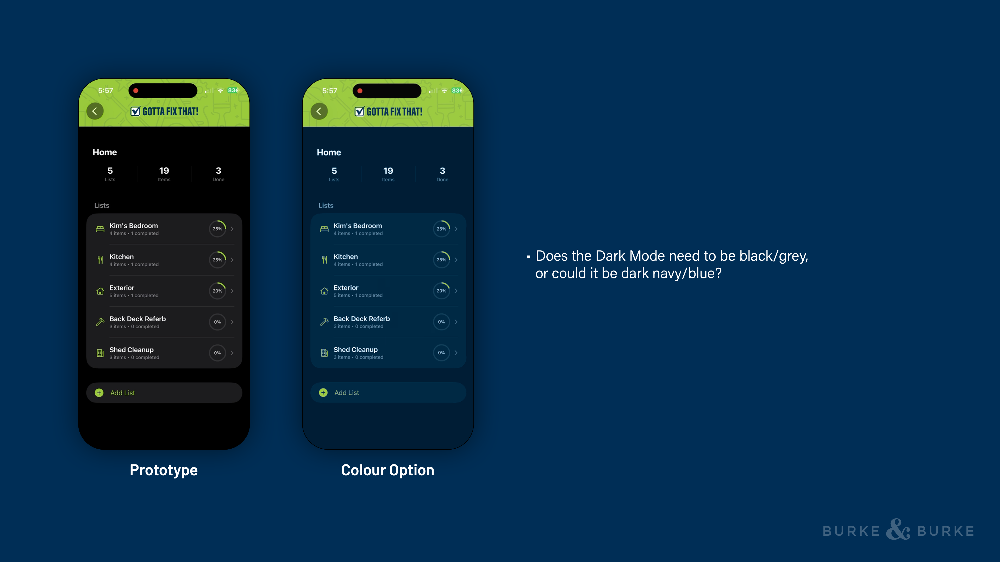
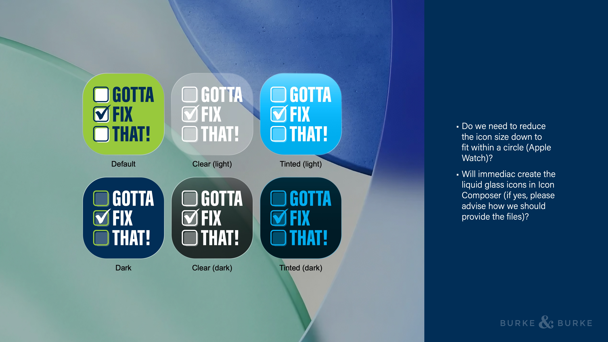

Review Page

This page lines up the PDF review pages, the extracted notes, and the current reference screenshots we already have in the repo. It is meant to help us visually verify whether the implementation is matching the review feedback.
Focus: intro layout, icon consistency, and the overall first-screen composition.


Focus: logo centering, logo scale, and dark-mode card styling.

Focus: list copy, icon choice, and stronger navigation arrows.

Focus: card radius, thumbnails, square checkboxes, detail disclosure, and row simplification.


Focus: whether dark mode should lean brand navy instead of pure black/gray.

Focus: icon composition in circular contexts and Icon Composer workflow questions.
